건축기사 (2013-09-28 기출문제)
1과목: 건축계획
1. 메조넷형 아파트에 관한 설명으로 옳지 않은 것은?
- 다양한 평면구성이 가능하다.
- 소규모 주택에서는 비경제적이다.
- 편복도형일 경우 프라이버시가 양호하다.
- 복도와 엘리베이터 홀은 각 층마다 계획된다.
(정답률: 78%)

2. 다음과 같은 특징을 갖는 에스컬레이터 배열방법은?
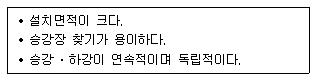
- 복렬형
- 교차형
- 단열 중복형
- 복렬 병렬형
(정답률: 59%)
3. 호텔건축에 관한 설명으로 옳지 않은 것은?
- 호텔의 관리부분에 의해 호텔의 외형이 결정된다.
- 호텔의 공공부분은 호텔 전체의 매개공간 역할을 한다.
- 호텔의 공공부분 중 수익성 부분은 일반적으로 1층과 지하층에 두는 경우가 많다.
- 호텔의 숙박부분은 호텔의 가장 중요한 부분으로 객실은 쾌적성과 개성을 필요로 한다.
(정답률: 85%)
4. 래드번(Radburn) 계획에서 슈퍼블록을 구성함으로써 얻어 질 수 있는 효과로 옳지 않은 것은?
- 충분한 공동의 오픈스페이스의 확보가 가능
- 건물을 집약화함으로써 고층화ㆍ효율화가 가능
- 커뮤니티시설의 중심배치로 간선도로변의 활성화가 가능
- 도로교통의 개선, 즉 보도와 차도의 완전한 분리가 가능
(정답률: 70%)
5. 다음의 건축 작품과 설계자의 연결이 옳지 않은 것은?
- 낙수장 : 프랭크 로이드 라이트
- 사보이(Savoye) 주택 : 르 코르뷔지에
- 킴벨(Kimbel) 미술관 : 윌터 그로피우스
- 투겐하트 (Tugendhat) 주택 : 미스 반 데 로에
(정답률: 55%)
6. 다음 중 상점 정면(facade)구성에 요구되는 5가지 광고요소(AIDMA 법칙)에 속하지 않은 것은?
- Attention(주의)
- Identity(개성)
- Desire(욕구)
- Memory(기억)
(정답률: 81%)
7. 학교운영방식에 관한 설명으로 옳지 않은 것은?
- 종합교실형은 각 학급마다 가정적인 분위기를 만들 수 있다.
- 교과교실형은 초등학교 저학년에 대해 가장 권장되는 방식이다.
- 플래툰은 미국의 초등학교에서 과밀을 해소하기 위해 실시한 것이다.
- 달톤형은 학급, 학년 구분을 없애고 학생들을 각자의 능력에 따라 교과를 선택하고 일정한 교과를 끝내면 졸업하는 방식이다.
(정답률: 87%)
8. 한국건축의 가구법과 관련하여 칠량가에 속하지 않는 것은?
- 무위사 극락전
- 수덕사 대웅전
- 금산사 대적광전
- 지림사 대적광전
(정답률: 60%)
9. 복도형인 아파트의 복도에 관한 설명으로 옳지 않은 것은?
- 복도의 벽 및 반자의 배수구를 설치하고, 바닥의 배수에 지장이 없도록 한다.
- 외기에 개방된 복도에는 배수구를 설치하고, 바닥의 배수에 지장이 없도록 한다.
- 2세대 이상이 공동으로 사용하는 복도의 유효폭은 갓복도의 경우 최소 120cm 이상으로 한다.
- 중복도에는 채광 및 통풍이 원활하도록 50m 이내마다 1개소 이상 외기에 면하는 개구부를 설치한다.
(정답률: 67%)
10. 병원건축의 형식 중 분관식에 관한 설명으로 옳지 않은 것은?
- 동선이 길어진다.
- 채광 및 통풍이 좋다.
- 대지면적제 제약이 있는 경우에 주로 적용된다.
- 환자는 주로 경사로를 이용한 보행 또는 들것으로 운반된다
(정답률: 86%)
11. 극장의 평면형 중 프로시니엄형에 관한 설명으로 옳지 않은 것은?
- Picture Frame stage라고도 불린다.
- 강연, 콘서트, 독주, 연극공연 등에 적합하다.
- 무대의 배경을 만들지 않으므로 경제성이 있다.
- 연기자가 일정한 방향으로만 관객을 대하게 된다.
(정답률: 86%)
12. 연속적인 주제를 선적으로 관계성 깊게 표현하기 위하여 전경(全景)으로 펼쳐지도록 연출하여 맥락이 중요시될 때 사용되는 특수전시기법은?
- 아일랜드 전시
- 하모니카 전시
- 디오라마 전시
- 파노라마 전시
(정답률: 74%)
13. 다음 중 10만권을 수용하는 도서관의 서고 면적으로 가장 적절한 것은?
- 500m2
- 750m2
- 900m2
- 1000m2
(정답률: 86%)
14. 하양식 공포가 사용된 건축물은?
- 무위사 극락전
- 봉정사 극락전
- 화암선 극락전
- 부석사 무량수전
(정답률: 47%)
15. 오피스 랜드스케이프(office landscape)에 관한 설명으로 옳지 않은 것은?
- 조경면적이 확대된다.
- 작업의 폐쇄성이 저하된다.
- 사무능률의 향상을 도모한다.
- 공간의 효율적 이용이 가능하다.
(정답률: 70%)
16. 학교 건축에서 단층교사에 관한 설명으로 옳지 않은 것은?
- 재해시 피난이 유리하다.
- 학습활동을 실외에 연장할 수 있다.
- 부지의 이용률이 높으며 설비의 배선, 배관을 집약할 수 있다.
- 개개의 교실에서 밖으로 직접 출입할 수 있으므로 복도가 혼잡하지 않다.
(정답률: 85%)
17. 다음의 주요 사례에서 전시공간의 융통성을 가장 많이 부여하고 있는 것은?
- 뉴욕 구겐하임 미술관
- 과천 현대 미술관
- 파리 퐁피두 센터
- 파리 루브르 박물관
(정답률: 83%)
18. 주거단지 내의 공동시설에 관한 설명으로 옳지 않은 것은?
- 중심을 형성할 수 있는 곳에 설치한다.
- 이용 빈도가 높은 건물은 이용거리를 길게 한다.
- 확장 또는 증설을 위한 용지를 확보하는 것이 좋다.
- 이용성, 기능상의 인접성, 토지이용의 효율성에 따라 인접하여 배치한다.
(정답률: 90%)
19. 다음 설명에 알맞은 사무소 건축의 코어 유형은?
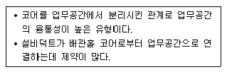
- 외코어형
- 편단코어형
- 양단코어형
- 중앙코어형
(정답률: 75%)
20. 공장건축의 지붕형에 관한 설명으로 옳지 않은 것은?
- 솟을지붕은 채광, 환기에 적합한 방법이다.
- 샤렌지붕은 기둥이 많이 소요되는 단점이 있다.
- 뽀족지붕은 직사광선을 어느 정도 허용하는 결점이 있다.
- 톱날지붕은 북향의 채광창으로 하루종일 변함 없는 조도를 유지할 수 있다.
(정답률: 81%)
2과목: 건축시공
21. 투수성이 나쁨 점토질 연약지반에 적합하지 않은 탈수공법은?
- 샌드 드레인(sand drain)공법
- 생석회 말뚝(chemico pile)공법
- 페이퍼 드레인(paper drain)공법
- 웰 포인트(well point)공법
(정답률: 77%)
22. 지름 100mm, 높이 200mm의 콘크리트 공시체를 쪼갬인장강도시험에 위해 강도를 측정하였더니 파괴하중이 63kN이었다 이 공시체의 인장강도는?
- 0.8 MPa
- 1.5 MPa
- 2 MPa
- 3 MPa
(정답률: 38%)
23. 고강도 콘크리트에 관련된 내용으로 옳지 않은 것은?
- 고강도 콘크리트는 결합재량의 증가로 점성이 증가하고 낮은 물-시멘트비로 인해 시간의 경과에 따른 슬럼프 감소가 큰 편이다.
- 고강도 콘크리트는 점성과 유동성이 커서 측압의 증가에 따른 거푸집 붕괴사례가 많다.
- 고강도 콘크리트는 블리딩이 많아 표면건조가 느리기 때문에 플라스틱균열 발생 위험이 적다.
- 초고강도 콘크리트는 높은 점성 때문에 충분한 타설시간이 필요하다.
(정답률: 62%)
24. 골재의 실적율이 클 경우 콘크리트에 주는 영향으로 옳지 않은 것은?
- 콘크리트의 투수성이 커진다.
- 콘크리트의 수화발열량을 감소시킨다.
- 콘크리트의 마모저항성이 커진다.
- 콘크리트의 건조수축을 감소시킨다.
(정답률: 49%)
25. 공사현장의 가설건축물에 대한 설명으로 옳지 않은 것은?
- 하도급자 사무실은 후속공정에 지장이 없는 현장사무실과 가까운 곳에 둔다.
- 시멘트 창고는 통풍이 되지 않도록 출입구 외에는 개구부 설치를 금하고, 벽, 천장, 바닥에는 방수, 방습처리한다.
- 변전소는 안전상 현장사무실에서 가능한 멀리 위치시킨다.
- 인화성 재료저장소는 벽, 지붕 천장의 재료를 방화구조 또는 불연구조로 하고 소화설비를 갖춘다.
(정답률: 85%)
26. 백화현상에 대한 설명으로 옳지 않은 것은?
- 시멘트는 수산화칼슘의 주성분인 생석회(CaO)의 다량 공급원으로서 백화의 주된 요인이다.
- 백화 현상은 사용하는 비장 표면뿐만 아니라 벽돌벽체, 타일 및 착색 시멘트 제품 등의 표면에도 발생한다.
- 배합수 중에 용해되는 가용 성분이 시멘트 경화체의 표면건조 후 나타나는 백화를 1차 백화라 한다.
- 겨울철보다 여름철의 높은 온도에서 백화 발생 빈도가 높다.
(정답률: 84%)
27. 지하연속벽 공법 중 슬러리 윌(slurry wall)에 대한 특징으로 옳지 않은 것은?
- 시공시 소음ㆍ진동이 크다.
- 인접건물의 경계선까지 시공이 가능하다.
- 주변 지반에 대한 영향이 적고 차수효과가 확실하다.
- 지반 굴착시 안정액을 사용한다.
(정답률: 72%)
28. 건축공사표준시방서에 따른 유동화 콘크리트 공기량의 표준값은? (단, 보통 콘크리트의 경우)
- 4%
- 4.5%
- 5%
- 5.5%
(정답률: 40%)
29. 석재에 관한 설명으로 옳지 않은 것은?
- 심성암에 속한 암석은 대부분 입상의 결정 광물로 되어 있어 압축강도가 크고 무겁다.
- 화산암의 조암광물은 결정질이 작고 비결정질이어서 경석과 같이 공극이 많고 물에 뜨는 것도 있다.
- 안산암은 강도가 작고 내화적이지 않으나, 색조가 균일하며 가공도 용이하다.
- 화성암은 풍화물, 유기물, 기타 광물질이 땅속에 퇴적되어 지열과 지압을 받아서 응고된 것이다.
(정답률: 75%)
30. 보강콘크리트 블록조에 대한 설명 중 옳지 않은 것은?
- 내력벽으로 둘러싸인 부분의 바닥면적은 80m2을 넘지 않도록 한다.
- 벽체의 줄눈은 통줄눈이 되지 않도록 한다.
- 철근보강시 철근은 굵은 것을 조금 넣는 것보다 가는 것을 많이 넣는 것이 좋다.
- 벽은 집중적으로 배치하지 말아야 하며, 가능한 한 균등히 배치한다.
(정답률: 72%)
31. 철골공사의 용접작업 시 발생하는 각 용접결함에 대한 설명으로 옳지 않은 것은?
- 언더 컷(Under cut)은 모재가 용착금속이 채워지지 않고 흠으로 남게 된 부분을 말한다.
- 오버 랩(Over lap)은 용접금속과 모재가 융합되지 않고 겹쳐지는 것을 말한다.
- 블로우 홀(Blow hole)은 금속이 녹아들 때 생기는 기포를 말한다.
- 피트(Pit)는 용접 후 냉각 시 용접부에 생기는 갈라짐을 말한다.
(정답률: 58%)
32. 공사계약을 맺은 다음 설계도서 현저하게 빠진 부분이 있음을 발견했을 때 그 조치로서 시공업자가 해야 할 일은?
- 공사비의 범위내에서 시공해야 한다.
- 공사를 감리하는 건축사에게 신고해야 한다.
- 직접 건축주에게 신고해야 한다.
- 건설업자의 부담으로 시공해야 한다.
(정답률: 83%)
33. 목조 지붕틀 구조에 있어서 중도리와 ㅅ자보를 연결하는데 가장 적합한 철물은?
- 띠쇠
- 감잡이쇠
- 주걱볼트
- 엇꺾쇠
(정답률: 62%)
34. 익스팬션조인트(expansion joint)의 설치원인과 목적에 관한 기술 중 옳지 않은 것은?
- 콘크리트를 이어치기할 때 신구 콘크리트의 구조적 일체성 확보 강화를 위해 설치한다.
- 콘크리트의 팽창, 수축에 대한 유해한 균열 방지를 목적으로 한다.
- 건축물을 평면적으로 증축하고자 할 때 설치한다.
- 기초의 부동침하에 대비하여 이를 예방하고, 변위흡수를 목적으로 한다.
(정답률: 41%)
35. 도장시공 전 및 도료 사용 시 주의사항으로 옳지 않은 것은?
- 도료는 사용전 잘 교반하여 균일하게 한 후 사용하고, 과도한 희석은 피한다.
- 기온이 5℃ 이하이거나 상대습도 85% 이상인 환경이 도장하기에 가장 적합하다.
- 하도용 도료와 적합한 상도용 도료를 선택하고 층간밀착성이 양호해야 한다.
- 소지조정, 표면처리의 방법에 따라 녹이나 기름기제거, 표면의 거칠기 정도를 관리한다.
(정답률: 82%)
36. 다음 각 건축재료의 할증료로 옳지 않은 것은?
- 붉은벽돌 3% 이내
- 자기타일 3% 이내
- 단열재 10% 이내
- 내화벽돌 1% 이내
(정답률: 72%)
37. 제치장 콘크리트의 시공에 관한 설명으로 옳지 않은 것은?
- 배합수로 사용하는 지하수질도 착색을 일으키는 원인이 될 수 있으므로 주의해야 한다.
- 콘크리트를 한꺼번에 높이 타설하는 경우 기포가 쉽게 발생할 수 있다.
- 콘크리트는 묽은 비빔으로 사용하므로 진동기를 사용하지 않는다.
- 창문, 벽체줄눈, 폼 타이 구멍 등의 위치가 맞지 않은 경우 재시공 및 보수가 어려운 편이다.
(정답률: 81%)
38. 건축공사관리와 관련한 설명 중 옳지 않은 것은?
- 건축공사의 중반이후에 공기단축을 시도하는 것이 초반부에 시도하는 것보다 비용상 효과적이다.
- 가치공학(VE)기법의 적용효과는 시공단계에서보다 설계단계에서 더 크게 나타난다.
- 품질관리를 위한 도구는 관리도, 체크시트, 산점도 등이 있다.
- 안전재해를 줄이기 위해 위험예지훈련, Tool Box Meeting 등을 실시한다.
(정답률: 73%)
39. 품질관리 사이클의 순서로 옳은 것은?
- 계획-검토-실시-조치
- 계획-검토-조치-실시
- 계획-실시-조치-검토
- 계획-실시-검토-조치
(정답률: 62%)
40. 토공사에서 활용되는 다짐용 기계장비가 아닌 것은?
- 머캐덤 롤러
- 캠핑 롤러
- 램머
- 파워쇼벨
(정답률: 83%)
3과목: 건축구조
41. 그림과 같은 라멘의 AB재에 휨모멘트가 발생하지 않게 하려면 P는 얼마가 되어야 하는가?
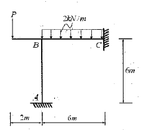
- 3 kN
- 4 kN
- 5 kN
- 6 kN
(정답률: 58%)
42. 강도설계법에서 흙에 접하거나 옥외의 공기에 직접 노출되는 현장 치기 콘크리트인 경우 D16 이하 철근의 최소피복두께는 얼마로 하는가?
- 20mm
- 30mm
- 40mm
- 50mm
(정답률: 56%)
43. 콘크리트 구조물의 설계법 중 강도설계법의 특징으로 옳지 않은 것은?
- 구조물의 파괴에 대한 안전도의 확보가 확실하다.
- 서로 다른 하중의 특성을 설계에 반영할 수 있다.
- 서로 다른 재료의 특성을 설계에 반영시키기 어렵다.
- 처짐 및 균열에 대한 사용성 확보 검토가 불필요하다.
(정답률: 70%)
44. 그림의 용접기호와 관련된 내용으로 옳은 것은?
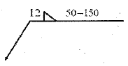
- 양면용접에 용접길이 50mm
- 용접 간격 100mm
- 용접 치수 12mm
- 연속 용접
(정답률: 68%)
45. 그림과 같은 단순보에서 최대 전단응력은 얼마인가?
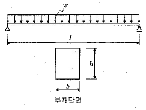
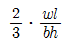
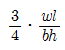
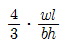
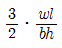
(정답률: 42%)
46. 상단과 하단이 고정된 길이 6m, 단면적 1cm2인 강봉의 상단으로부터 2m 지점에 45kN의 하향 측력이 작용할 때 하중 작용점의 변위는? (단, Es=200,000MPa)
- 3.0mm
- 3.5mm
- 4.0mm
- 4.5mm
(정답률: 25%)
47. 지진의 진도(Intensity)와 규모(Magnitude)에 대한 설명으로 옳지 않은 것은?
- 진도는 상대적 개념의 지진크기이다.
- 규모는 장소에 관계없는 절대적 개념의 크기이다.
- 진도는 사람이 느끼는 감각, 물체 이동 등을 계급별로 구분한다.
- 규모는 지반의 운동정도를 평가하나 정밀하지는 않다,
(정답률: 78%)
48. 강재의 항복비(Tield Ratio)에 대한 설명 중 옳지 않은 것은?
- 강재의 인장강도에 대한 한복강도의 비를 의미한다.
- 고강도 강재일수록 항복비가 크다.
- 항복비는 소성능력, 강재부식에 영향을 준다.
- 항복비가 클수록 연성거동을 확보하기 어렵다.
(정답률: 39%)
49. 기초 설계시 장기 100kN(자중포함)의 하중을 받는 경우 장기허용지내력도 20kN/m2의 지반에서 필요한 기초판의 크기는?
- 1.5m × 1.5m
- 1.8m × 1.8m
- 2.1m × 2.1m
- 2.4m × 2.4m
(정답률: 63%)
50. 고력볼트 F10T(M20) 일면전단일 때 볼트 한 개당 설계전단강도(øRu)를 구하면? (단, 고력볼트의 Fu=1000MPa, ø=0.75, Fnv=0.5Fu임)
- 117.8kN
- 94.2kN
- 58.8kN
- 47.1kN
(정답률: 59%)
51. 보가 잇는 2방향 슬래브를 강도설계법에서 직접설계법으로 계산할 때 Mo=900kNㆍm로 산정되었다. 내부스팬의 정계수모멘트(kNㆍm)와 부계수모멘트(kNㆍm)로 옳은 것은?
- 정계수모멘트 315, 부계수모멘트 585
- 정계수모멘트 270, 부계수모멘트 630
- 정계수모멘트 585, 부계수모멘트 315
- 정계수모멘트 630, 부계수모멘트 270
(정답률: 46%)
52. 다음 그림에서 부정정보의 부재력 MAB의 크기는?
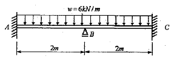
- 2 kNㆍm
- 3 kNㆍm
- 4 kNㆍm
- 5 kNㆍm
(정답률: 40%)
53. 다음 라멘구조물의 부정정 차수는?
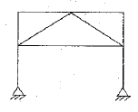
- 9차 부정정
- 10차 부정정
- 11차 부정정
- 12차 부정정
(정답률: 58%)
54. 다음과 같은 트러스에서 a부재의 부재력은 얼마인가?
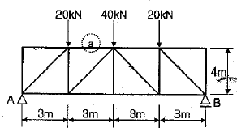
- 20kN(인장)
- 30kN(압축)
- 40kN(인장)
- 60kN(압축)
(정답률: 73%)
55. 강도설계법에서 처짐을 계산하지 않은 경우, 철근 콘크리트 보의 최소두께 규정으로 옳은 것은? (단, 보통콘크리트 Wc=2,300 kg/m3와 설계기준항복강도 400MPa 철근을 사용한 부재)
- 단순지지 : l/20
- 1단연속 : l/18.5
- 양단연속 : l/24
- 캔틸레버 : l/10
(정답률: 74%)
56. 강도설계법에서 압축 이형철근 D22의 기본정착길이는? (단, D22 철근의 단면적은 287mm2, 콘크리트의 압축강도는 24MPa, 철근의 항복강도는 400MPa, 경량콘크리트계수는 1)
- 400 mm
- 450 mm
- 500 mm
- 550 mm
(정답률: 67%)
57. 모살치수 8mm, 용접길이 400mm인 양면모살용접의 유효단면적은 약 얼마인가?
- 2100 mm2
- 3200 mm2
- 3800 mm2
- 4300 mm2
(정답률: 54%)
58. 그림과 같은 캔틸레버보의 자유단(B점)에서 처짐각은?
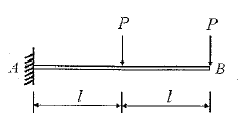
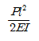
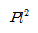
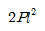
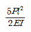
(정답률: 66%)
59. 단면의 폭 b=250mm, 높이 h=500mm인 직사각형 콘크리트 단면의 균열모멘트 Mor을 구하면? (단, 경량콘크리트계수 λ=1, fck=24MPa)
- 8.3 kNㆍm
- 16.4 kNㆍm
- 24.5 kNㆍm
- 32.2 kNㆍm
(정답률: 65%)
60. 볼트의 기계적 등급을 나타내기 위해 표시하는 F8T, F10T, F11T에서 가운데 숫자는 무엇을 의미하는가?
- 휨강도
- 인장강도
- 압축강도
- 전단강도
(정답률: 70%)
4과목: 건축설비
61. 통기배관에 관한 설명을 옳지 않은 것은?
- 간접배수계통의 통기관은 단독 배관한다.
- 통기수직관과 우수수직관은 겸용 배관한다.
- 각개통기방식에서는 반드시 통기수직관을 설치한다.
- 배수수직관의 상부는 연장하여 신정통기관으로 사용한다.
(정답률: 58%)
62. 덕트의 분기부에 설치하여 풍량조절용으로 사용되는 댐퍼는?
- 스플릿 댐퍼
- 평행익형 댐퍼
- 대향익형 댐퍼
- 버터플라이 댐퍼
(정답률: 76%)
63. 구조가 간단하고 자기 사이폰 작용을 일으키면 자정작용을 갖는 배수 트랩으로 사이폰 작용을 일으키기 쉽기 때문에 사이폰 트랩이라고도 불리우는 것은?
- 벨트랩
- 관트랩
- 드럼트랩
- 버킷트랩
(정답률: 50%)
64. 관 속의 유체가 섞여 잇는 모래, 쇠부스러기 등의 이물질을 제거하여 기기의 성능을 보호하기 위해 배관에 설치하는 것은?
- 패킹
- 볼 탭
- 체크 밸브
- 스트레이너
(정답률: 62%)
65. 엘리베이터의 주요 기기의 설치 위치는 기계실, 승강로, 승장 등을 나눌 수 있다. 다음중 기계실에 설치하는 것은?
- 가이드 레일
- 완충기
- 균형추
- 권상기
(정답률: 68%)
66. 다음 중 실내에 결로 현상이 발생하는 원인과 가장 거리가 먼 것은?
- 실내외 온도 차
- 실내의 완전 건조
- 구조재의 열적 특성
- 생활 습관에 의한 환기 부족
(정답률: 74%)
67. 전기설비에서 다음과 같이 정의되는 것은?
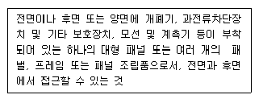
- 캐비닛
- 차단기
- 배전반
- 분전반
(정답률: 67%)
68. 크로스 커넥션(cross connection)에 관한 설명으로 옳은 것은?
- 관로내의 유체가 급격히 변화하여 압력변화를 일으키는 것
- 상수로부터의 급수계통(배관)과 그 외의 계통이 직접 접속되어 있는 것
- 겨울철 난방을 하고 있는 실내에서, 창을 타고 차가운 공기가 하부로 내려오는 현상
- 급탕ㆍ반팅관의 순환거리를 각 계통에 있어서 거의 같게 하여 전 계통이 탕의 순환을 촉진하는 방식
(정답률: 67%)
69. 다음의 에스컬레이터의 경사도에 관한 설명 중 ( )안에 알맞은 것은?
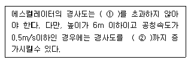
- ① 25° , ② 30°
- ① 25° , ② 35°
- ① 30° , ② 35°
- ① 30° , ② 40°
(정답률: 75%)
70. 특별고압 계기용 변성기의 2차측 전로 및 고압용 또는 특별고압용 기계 기구의 절대 및 금속제 외함에 필요한 접지공사의 종류는?
- 제1종 접지공사
- 제2종 접지공사
- 제3종 접지공사
- 특별 제3종 접지공사
(정답률: 47%)
71. 축전지의 충전방식 중 필요할 때마다 표준 시간율로 소정의 충전을 하는 방식은?
- 보통 충전
- 급속 충전
- 세류 충전
- 균등 충전
(정답률: 78%)
72. 전기설비가 어느 정도 유효하게 사용되는가를 나타내며, 다음과 같이 표현되는 것은?
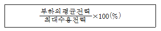
- 역률
- 부등률
- 부하율
- 수용률
(정답률: 79%)
73. 고속덕트에 관한 설명으로 옳지 않은 것은?
- 원형덕트의 사용이 불가능하다.
- 동일한 풍량을 송풍할 경우 저속덕트에 비해 송풍기 동력이 많이 든다.
- 공장이나 창고 등과 같이 소음이 별로 문제가 되지 않는 곳에 사용된다.
- 동일한 풍량을 송풍할 경우 저속덕트에 비해 덕트의 단면치수가 작아도 된다.
(정답률: 70%)
74. 습공기의 엔탈피에 관한 설명으로 옳은 것은?
- 건구온도가 높을수록 커진다.
- 절대습도가 높을수록 작아진다.
- 수증기의 엔탈피에서 건공기의 엔탈피를 뺀 값이다.
- 습공기를 냉각ㆍ가습할 경우, 엔탈피는 항상 감소한다.
(정답률: 60%)
75. TV 공청설비의 주요 구성기기에 해당하지 않는 것은?
- 증폭기
- 월패드
- 컨버터
- 혼합기
(정답률: 69%)
76. 공기조화방식 중 2중 덕트방식에 관한 설명으로 옳지 않은 것은?
- 전공기식 방식이다.
- 덕트가 2개의 계통이므로 설비비가 많이 든다.
- 부하특성이 다른 다수의 실이나 존에도 적용할 수 있다.
- 냉풍과 온풍을 혼합하는 혼합상자가 필요 없으므로 소음과 진동도 적다.
(정답률: 73%)
77. 냉방설비의 냉각탑에 관한 설명으로 옳은 것은?
- 열에너지에 의해 냉동효과를 얻는 장치
- 냉동기의 냉각수로 재활용하기 위한 장치
- 임펠러의 원심력에 의해 냉매가스를 압축하는 장치
- 물과 브롬화리튬 혼합용액으로부터 냉매인 수증기와 흡수제인 LiBr로 분리시키는 장치
(정답률: 77%)
78. 배수관에 있어서 청소구(clean out)응 원칙적으로 설치해야 하는 곳이 아닌 것은?
- 배수수직관의 최상부
- 배수 수평주관의 기점
- 배수관이 45° 이상의 각도로 방향을 바꾸는 곳
- 배수 수평주관과 옥외배수관의 접속장소와 가까운 곳
(정답률: 73%)
79. 다음 그림과 같이 A지점과 B지점의 관경이 각각 dA=100mm, dB=200mm 이고, 유량이 3.0m3/min 이라면 A, B 지점에서의 유속(m/s)은 각각 얼마인가?
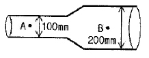
- A : 1.59 m/s, B : 0.80 m/s
- A : 1.59 m/s, B : 6.37 m/s
- A : 6.37 m/s, B : 3.19 m/s
- A : 6.37 m/s, B : 1.59 m/s
(정답률: 51%)
80. 증기난방에 관한 설명으로 옳지 않은 것은?
- 예열시간이 짧다.
- 계통별 용량제어가 곤란하다.
- 온수난방에 비해 한량지에서 동결의 우려가 적다.
- 온수난방에 비해 부하변동에 따른 실내방열량의 제어가 용이하다.
(정답률: 77%)
5과목: 건축법규
81. 다음의 부설주차장 설치대상 시설물 중 설치대수의 산정 기준이 시설면적이 아닌 것은?
- 운수시설
- 종교시설
- 제2종 근린생활시설
- 문화 및 집회시설 중 관람장
(정답률: 58%)
82. 기계식주차장에는 도로에서 기계식주차장치 출입구까지의 차로 또는 전면공지와 접하는 장소에 자동차가 대기할 수 있는 장소(정류장)를 설치하여야 한다. 다음 중 정류장의 확보 기준으로 옳은 것은?
- 주차대수가 10대를 초과하는 매 10대마다 1대분의 정류장을 확보
- 주차대수가 10대를 초과하는 매 20대마다 1대분의 정류장을 확보
- 주차대수가 20대를 초과하는 매 10대마다 1대분의 정류장을 확보
- 주차대수가 20대를 초과하는 매 20대마다 1대분의 정류장을 확보
(정답률: 54%)
83. 비상용승강기의 승강장의 구조에 관한 기준 내용으로 옳지 않은 것은?(관련 규정 개정전 문제로 여기서는 기존 정답인 3번을 누르면 정답 처리됩니다. 자세한 내용은 해설을 참고하세요.)
- 승강장은 각종의 내부와 연결될 수 있도록 한다.
- 벽 및 반자가 실내에 접하는 부분의 마감재료는 불연재료로 하여야 한다.
- 피난층에 있는 승강장의 경우 내부와 연결되는 출입구에는 갑종방화문을 설치하여야 한다.
- 옥내에 설치하는 승강장의 바닥면적은 비상용승강기 1대에 대하여 6m2 이상으로 하여야 한다.
(정답률: 55%)
84. 피난안전구역의 구조 및 설비에 관한 기준 내용으로 옳지 않은 것은?
- 피난안전구역의 높이는 2.1m 이상일 것
- 비상용 승강기는 피난안전구역에서 승하차 할 수 있는 구조로 설치할 것
- 건축물의 내부에서 피난안전구역을 통하는 계단은 피난계단의 구조로 설치할 것
- 피난안전구역에는 식수공급을 위한 급수전을 1개소 이상 설치하고 예비전원에 위한 조명설비를 설치할 것
(정답률: 70%)
85. 어느 건축물에서 주차장 외의 용도로 사용되는 부분이 판매시설인 경우, 이 건축물이 주차전용건축물이 되기 위해서는 건축물의 연면적 중 주차장으로 사용되는 부분의 비율이 최소 얼마 이상이어야 하는가?
- 50%
- 70%
- 85%
- 95%
(정답률: 76%)
86. 문화 및 집회시설 중 공연장의 개별관람석의 출구에 관한 기준 내용으로 옳지 않은 것은? (단, 개별관람석의 바닥면적이 300m2 이상인 경우)
- 관람석별로 2개소 이상 설치하여야 한다.
- 각 출구의 유효너비는 1.2m 이상이어야 한다.
- 바깥쪽으로의 출구로 쓰이는 문은 안여닫이로 하여서는 아니된다.
- 개별관람석 출구의 유효너비의 합계는 개별관람석의 바닥면적 100m2마다 0.6m의 비율로 산정한 너비 이상으로 하여야 한다.
(정답률: 72%)
87. 다음 중 대수선의 범위에 속하지 않는 것은?
- 피난계단을 증설 또는 해체하는 것
- 기둥을 3개 이상 수선 또는 변경하는 것
- 미관지구에서 건축물의 담장을 변경하는 것
- 아파트의 세대 간 경계벽을 수선 또는 변경하는 것
(정답률: 57%)
88. 건축법령상 공동주택에 속하지 않는 것은?
- 기숙사
- 연립주택
- 다중주택
- 다세대주택
(정답률: 62%)
89. 다음의 용도변경 중 허가 대상에 속하는 것은?
- 주거업무시설군에서 근린생활시설군으로의 용도변경
- 문화 및 집회시설군에서 영업시설군으로의 용도변경
- 자동차 관련 시설군에서 산업 등의 시설군으로의 용도변경
- 문화 및 집회시설군에서 교육 및 복지시설군으로의 용도변경
(정답률: 66%)
90. 다음의 건축선에 따른 건축제한과 관련된 기준 내용 중 ( )안에 알맞은 것은?
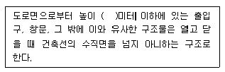
- 3
- 4.5
- 6
- 10
(정답률: 76%)
91. 목조건축물의 구조를 국토교통부령이 정하는 바에 따라 방화구조로 하거나 불연재료로 하여야 하는 연면적 기준은?
- 500m2 이상
- 1000m2 이상
- 1500m2 이상
- 2000m2 이상
(정답률: 58%)
92. 건축법령상 리모델링이 쉬운 구조에 속하지 않는 것은?
- 각 층마다 하나의 방화구획으로 구획되어 있을 것
- 각 세대는 인접한 세대와 수직 방향으로 통합하거나 분할할 수 있을 것
- 구조체에서 건축설비, 내부 마감재료 및 외부 마감재료를 분리할 수 있을 것
- 개별 세대 안에서 구획된 실의 크기, 개수 또는 위치 등을 변경할 수 있을 것
(정답률: 66%)
93. 국토의 계획 및 이용에 관한 법령상 제2종 전용주거지역 안에서 건축할 수 있는 건축물에 속하지 않는 것은?
- 공동주택
- 판매시설
- 노유자시설
- 교육연구시설 중 고등학교
(정답률: 58%)
94. 다음은 건축물의 공사감리에 관한 기준 내용이다. 밑줄 친 대통령령으로 정하는 용도 또는 규모의 공사 기준으로 옳은 것은?
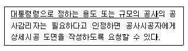
- 연면적의 합계가 3000m2 이상인 건축공사
- 연면적의 합계가 5000m2 이상인 건축공사
- 연면적의 합계가 10000m2 이상인 건축공사
- 연면적의 합계가 15000m2 이상인 건축공사
(정답률: 66%)
95. 피난층 외의 층으로서 피난층 또는 지상으로 통하는 직통계단을 2개소 이상 설치하여야 하는 대상 기준으로 옳지 않은 것은?
- 지하층으로서 그 층 거실의 바닥면적의 합계가 200m2 이상인 것
- 위락시설의 용도로 쓰는 층으로서 그 층에서 해당 용도로 쓰는 바닥면적의 합계가 200m2 이상인 것
- 판매시설의 용도로 쓰는 3층 이상의 층으로서 그 층의 해당 용도로 쓰는 거실의 바닥면적의 합계가 200m2 이상인 것
- 업무시설 중 오피스텔의 용도로 쓰는 층으로서 그 층의 해당 용도로 쓰는 거실의 바닥면적의 합계가 200m2이상인 것
(정답률: 62%)
96. 6층 이상의 거실면적의 합계기 5000m2인 경우, 다음 중 승용승강기를 가장 많이 설치해야 하는 것은? (단, 8인승 승용승강기를 설치하는 경우)
- 위락시설
- 숙박시설
- 판매시설
- 업무시설
(정답률: 56%)
97. 다음과 같은 조건에 있는 건축물의 연면적은? (단, 용적률을 산정하는 경우의 연면적)
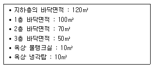
- 220m2
- 240m2
- 340m2
- 360m2
(정답률: 74%)
98. 도시ㆍ군계획 수립 대상지역의 일부에 대하여 토지 이용을 합리화하고 그 기능을 증진시키며 미관을 개선하고 양호한 환경을 확보하여, 그 지역을 체계적ㆍ계획적으로 관리하기 위하여 수립하는 도시ㆍ군관리계획은?
- 광역도시계획
- 지구단위계획
- 지구경관계획
- 택지개발계획
(정답률: 74%)
99. 국토의 계획 및 이용에 관한 법률상 도시ㆍ군기본계획의 내용에 포함되어야 하는 사항에 해당하지 않는 것은? (단, 그 밖에 대통령령으로 정하는 사항 제외)
- 공원ㆍ녹지에 관한 사항
- 토지의 이용 및 개발에 관한 사항
- 토지의 용도별 수요 및 공급에 관한 사항
- 광역시설의 배치ㆍ규모ㆍ설치에 관한 사항
(정답률: 66%)
100. 다음은 도시ㆍ군계획시설결정의 실효와 관련된 기준 내용이다. ( )안에 공통으로 들어갈 내용은?
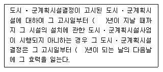
- 5
- 10
- 15
- 20
(정답률: 54%)